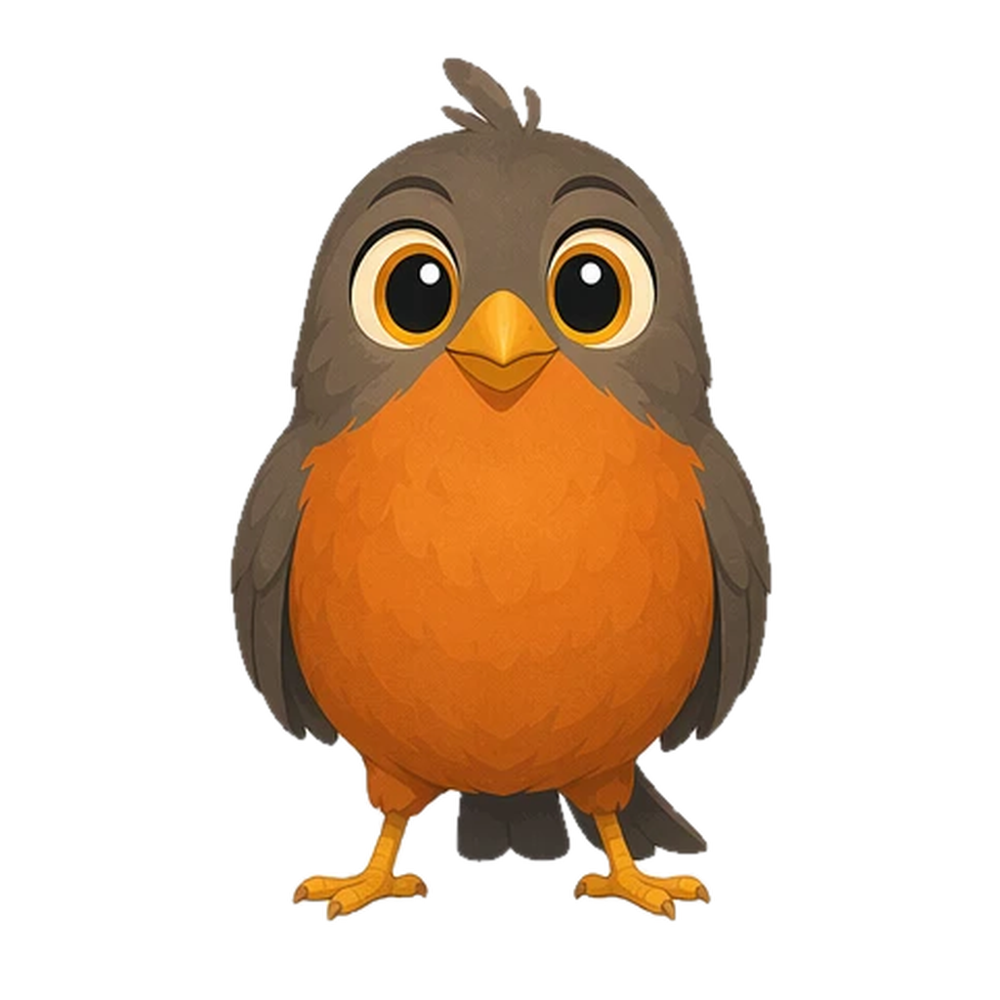
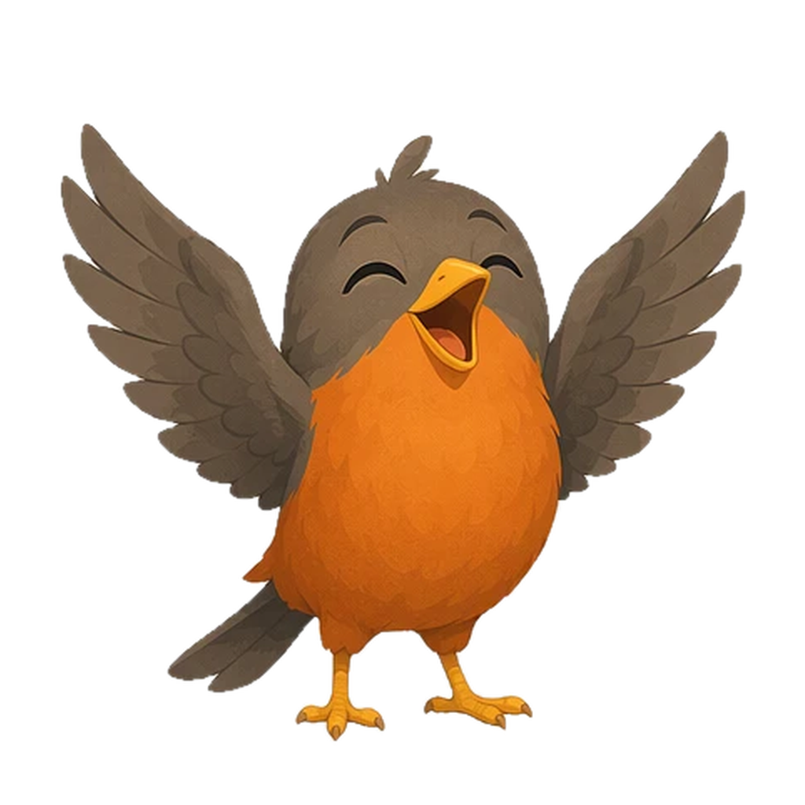

Faltou um dia? Tudo bem. Nada zera, a trilha só espera.

Os mesmos cinco passos todo dia, com um foco por semana: fôlego, pausa, clareza e estrutura. Fôlego e pausa cuidam do "falo rápido". Clareza cuida do "enrolado". Estrutura cuida do "não sei o que falar".
No dia 1 você grava uma apresentação curta, que fica guardada como o seu antes. No dia 30 você grava o mesmo tema e ouve as duas.
A trilha anda um dia por dia treinado. Se você faltar, ela espera no mesmo lugar. Quem quiser mais no mesmo dia pode repetir o dia ou fazer um treino livre.
Quem fala rápido e enrolado quase sempre está respirando curto, lá no alto do peito. Você só consegue falar tão devagar quanto respira. Quatro ou cinco ciclos de respiração baixa (barriga) acalmam o sistema nervoso e dão ar pras frases inteiras.
Trava-línguas falado devagar e exagerado acorda a boca: língua, lábios, mandíbula. "Enrolado" é, em boa parte, boca preguiçosa correndo atrás do pensamento. Primeiro bem lento, mastigando cada sílaba. Só depois no ritmo normal.
Um texto curto com uma marcação que avança no ritmo-alvo e para nas vírgulas e pontos. Você lê acompanhando a marca. Isso treina as duas coisas que mais fazem alguém soar claro: velocidade constante e pausas nos lugares certos. O ritmo é ajustável, e o alvo de ~130 palavras por minuto é o de uma conversa calma.
Um tema do dia e uma estrutura simples (por exemplo: ponto, porque, exemplo, ponto). A estrutura é o antídoto do "não sei o que falar": você nunca começa do zero, começa de um molde. Um minuto, gravado. Pausar é permitido. Silêncio não é erro.
A ferramenta mais poderosa que existe pra fala, e a mais evitada: se ouvir. Quase todo mundo descobre que soa melhor do que imaginava, e que o "rápido demais" tem lugares específicos. Se o navegador permitir, o app estima seu ritmo em palavras por minuto e conta muletas ("tipo", "né", "aí"). Depois você se avalia em três coisas e anota uma pra amanhã.
• Não precisa ficar bom hoje. Precisa aparecer hoje.
• Nada zera. Nada pune. A trilha espera você.
• Os áudios ficam só no seu aparelho e somem ao fechar. As únicas gravações guardadas são a do dia 1 e a do dia 30 da trilha, para você comparar, e elas também não saem do aparelho. O diário fica salvo no navegador.
• Esse treino é pra fluência e segurança no dia a dia. Se houver gagueira, travas fortes ou ansiedade que paralisa, um fonoaudiólogo faz uma diferença enorme, e este app é um bom complemento, não um substituto.
110 é bem calmo, 130 é conversa tranquila, 150 já é ritmo de rádio. Vale para o treino livre. Na trilha, cada unidade tem o seu ritmo.